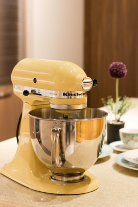

Batidora electrica
La batidora cuenta con soporte y bowl integrados que mantienen fijo el producto y facilitan su uso. Ahorrá tiempo y ganá en resultados deliciosos.
- Funciones: amasar, batir, mezclar.
- Cuenta con 10 velocidades.
- Su potencia es de 300 W.